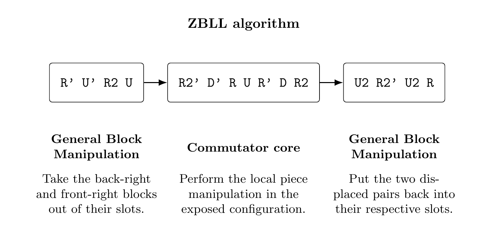
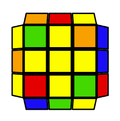
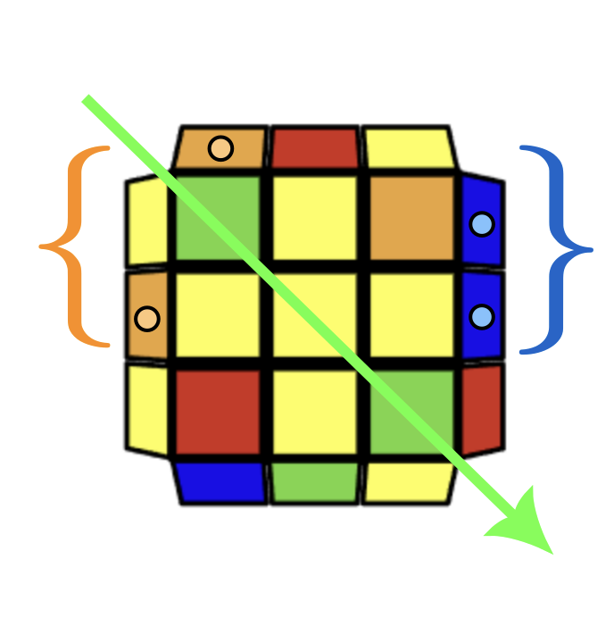

I finished learning full ZBLL on Monday, August 24th, 2026. I learned my first ZBLL algorithm in spring 2014. Holy cow, I’m just processing how long my journey has been. That’s 12 years!
For those who don’t know, ZBLL stands for Zborowski–Bruchem Last Layer. It’s a speedcubing algorithm set that solves the entire last layer in one step when its edges are already oriented. It’s basically completing the entire last layer in one step. And it’s 493 algorithms in totality. From a google search in 2026, supposedly only a few dozen people in the whole world know the full algset, but I’m suspecting that the actual number is in the hundreds, and I wouldn’t be surprised if more than a thousand people in the whole world knew it by the end of this year. More on this in a later paragraph.
Full ZBLL is like one of those really crazy challenges that people whisper of. It’s like the Mount Everest of speedcubing. It’s the biggest flex to show your cubing friends a slick ZBLL mid solve. You feel incredibly powerful when you recognize and execute a ZBLL in a real solve and you see tangible improvement in your times.
It’s also an incredibly frustrating journey. I actually gave up completely for a few years because I lost all motivation. I even gave my cubes away. Like multiple times. Thank goodness a really good cube nowadays costs only $9.
I used Tao Yu’s open source ZBLL trainer to learn the full algset. Man I love this site. ZBLL is split into 7 different subsets, and 6 of those 7 subsets are further split into 6 subsubsets, with each of those subsubsets in the current directory containing 12 algorithms.
ZBLL
├── T
│ ├── T1
│ │ ├── T1.1
│ │ ├── T1.2
│ │ └── ...
│ ├── T2
│ │ ├── T2.1
│ │ ├── T2.2
│ │ └── ...
│ └── ...
├── U
│ ├── U1
│ │ ├── U1.1
│ │ ├── U1.2
│ │ └── ...
│ ├── U2
│ │ ├── U2.1
│ │ ├── U2.2
│ │ └── ...
│ └── ...
├── L
│ ├── L1
│ │ ├── L1.1
│ │ ├── L1.2
│ │ └── ...
│ ├── L2
│ │ ├── L2.1
│ │ ├── L2.2
│ │ └── ...
│ └── ...
├── H
│ ├── H1
│ │ ├── H1.1
│ │ ├── H1.2
│ │ └── ...
│ ├── H2
│ │ ├── H2.1
│ │ ├── H2.2
│ │ └── ...
│ └── ...
├── Pi
│ ├── Pi1
│ │ ├── Pi1.1
│ │ ├── Pi1.2
│ │ └── ...
│ ├── Pi2
│ │ ├── Pi2.1
│ │ ├── Pi2.2
│ │ └── ...
│ └── ...
├── Sune
│ ├── Sune1
│ │ ├── Sune1.1
│ │ ├── Sune1.2
│ │ └── ...
│ ├── Sune2
│ │ ├── Sune2.1
│ │ ├── Sune2.2
│ │ └── ...
│ └── ...
└── Antisune
├── Antisune1
│ ├── Antisune1.1
│ ├── Antisune1.2
│ └── ...
├── Antisune2
│ ├── Antisune2.1
│ ├── Antisune2.2
│ └── ...
└── ...In Tao’s trainer, you can select any one or more of the subsubsets, and you can specify whether you want to go in order to ensure you sweep the entirety of the set, or randomly. One trick I used that wasn’t included in Tao’s trainer was invoking the Coupon’s Collector’s Problem (CCP) for random training. The Coupon Collector’s Problem (CCP) is a classic probability problem: suppose there are n distinct coupon types, and each purchase gives you one coupon chosen uniformly at random, with repeats allowed. The problem asks how many coupons you expect to collect before obtaining at least one of every type.
The expected number of samples is nHn, where Hn is the n-th harmonic number.
The intuition is that collecting the first few unique coupons is easy, but completing the set becomes progressively harder because an increasing fraction of new draws are duplicates.
Because I wanted to maximize my chance of sweeping the entirety of a given set at the minimal amount of samples, I would ask Codex to compute (CCP) with the size of my training set as the input.
For a ZBLL subsubset with n = 12,
Thus, when randomly training a 12-algorithm ZBLL subsubset, one should expect to perform approximately
cases before having encountered every algorithm at least once.
Caveat: 37 is the expected number of samples required to complete a sweep, not a guarantee. For example, approximately 63 random samples are required for a 95% probability of having encountered all 12 algorithms at least once.
As I became more familiar with the subset, there were often times when I didn’t know just a handful (< 10) of cases across different subsets, so in this case I would use the legendary Roman Strakhov’s trainer, where I could hand-select each case and then CCP those. To engage spaced-repetition, I would just solve normally and purposely solve the last layer cross to always force a ZBLL case.
I finished PLL in early 2015 when I went to my first ever speedcubing competition. Learning PLL took me an entire year because I had no bases—it’s like trying to understand what thermodynamic entropy is without first understanding abstract mathematics—every PLL was hardcoded in my wiring. I first became interested in learning full ZBLL when I went to U.S. Nationals 2018, when I learned an interesting perspective from a friend; he showed me that ZBLL algorithms can be decomposed—i.e., broken down into more fundamental building blocks, glued together with general block manipulation. This way I no longer needed to learn algorithms solely via muscle memory, but now using an already existing alphabet in my vocabulary. Once I understood the language of abstract mathematics, understanding thermodynamic entropy was unlocked because I now had an underlying alphabet. Entropy wasn’t something that was special, or hardcoded in my engineering toolkit—I no longer had to appeal to intuition, which was the scaffold I had relied previously upon my entire life to understand new concepts; if I focused on building a strong, general alphabet, then the concepts followed.
Continuing upon this new perspective, I began viewing new algorithms in terms of the following building blocks in no particular order:
- Commutators
- Winter Variation algs
- Triggers
- Pseudo change-of-basis
- General Block Manipulation

The coolest thing is you can combine any of the above to generate a ZBLL algorithm. Something to note is the combination of the above building blocks to generate algorithms for a given last layer edge-oriented case is non-trivial. That is, it’s really difficult to “freestyle” or come up with algorithms for ZBLL cases on the fly, like how we can pronounce new words we’ve never seen before in English because we can just sound it out. This is really similar to learning Chinese characters; every Chinese character can be decomposed into simpler radicals, but the total combination of the radicals to obtain the meaning of a specific Chinese character can’t be directly computed from the radicals alone—you have to learn the spatial positioning of the radical as well as the meaning of the total result. Learning ZBLL is like learning 3D Chinese with a temporal component. (I guess that makes it 4D Chinese?)
One of the great things about each ZBLL algorithm has its own personality. One shift in my perspective which helped me stay on track on my journey was attaching this sort of sentiment to each case. Instead of treating each algorithm as just a combination of the 5 building blocks aforementioned above, I began to really understand the unique feeling and flow of the algorithm. I began to pay deeper attention to the momentum shift of each algorithm, listening carefully to the rhythm and cadence of how these 5 building blocks were parsed during execution. This has actually made solving much more enjoyable too. It’s like every time I get to last layer, a familiar friend appears and we exchange a friendly gesture.
I wanted to go over some advice on approaching learning full ZBLL for newer solvers. I’m in no position to call myself a master of ZBLL, and I may never get to that point in my life. But I do want to point some things out that I wished I had paid more attention to when I was younger so perhaps it doesn’t take you 12 years to learn.
I guess the first thing is to really understand the 5 building blocks of ZBLL algorithms. alphabet and the grammar of the Rubik’s Cube. Grammar-wise, it’s important to understand commutators and conjugation deeply. I would recommend going over these two videos. I remember watching both of these several times spread across many years.
Learning full 3-style for blindfolded solving was when these grammatical concepts finally “clicked”. That in itself is another mountain, but the cubing community’s general consensus is that full ZBLL is a larger mountain that full 3-style.
Learning full Winter Variation (WV) is also important. There’s only 27 of them, and I think it took me a week to learn.
Pseudo-slotting is important too. This is when you misalign the D layer and solve F2L pairs with respect to the current misaligned layer. There are a lot of ZBLL cases where you change coordinate frames to a new misaligned D layer, do one or more of the 5 building blocks, and switch back to the original reference frame. Pseudo-slotting takes a lot of time to get used to, I will probably do another write-up just on this.
There is this notion of scaffold and iterative learning that I want to include as well. What I mean by scaffolding is this: Learning just enough of the algorithm so that you can solve the ZBLL case without an external source; i.e., everything is from the dome. It may take you a minute to sit down and think about the ordering of the 5 building blocks, but you can always achieve the solved state. This is where the 5 building blocks come in handy. For example, there are many times when I know every building block of the algorithm but I may have forgotten the last block; well if I understand WV, I just have a WV case left that I know. If I understanding commutators, I can just perform the commutator. If there’s a large block left, I can just perform general block manipulation to solve the last block.
By iterative learning I mean that the more and more you are able to recognize and complete the entire ZBLL algorithm, it may have taken you a minute to recognize and execute the first time you learned the algorithm, but each time you see it again it may take you 57 seconds. And then the next 52 seconds until you get to the elite caliber (recognition and recognition in under 2 seconds). But the most important thing is you need the scaffold first to begin this iterative process.
Another piece (sorry!) that helped me was building my own recognition schemes. Yes many exist on the web, but I truly believe that inventing your own recognition schemes is the only way to really stay motivated throughout the long journey. ZBLL recognition gets so convoluted that even learning schemes from other people gets intimidating fast. I often made up arbitrary markers for algs, for example, this case:


This is literally what I see in my head when I get this case. But the main point is that someone else who knows this case may not see it this way. If none of the brackets or arrows match the same corresponding colors, then it is not this case. This is cool because I am implicitly learning how to recognize each case, i.e., I am collecting a set of perhaps initially dependent (redundant) set of markers from my scaffold, but as I iteratively train these cases, my list of markers is a decreasing discrete function over time. (Just retaining the essential markers needed to linearly map those markers to a unique ZBLL case) Perhaps more rigorously, the list of markers may be optimal, but the way these markers are mapped to the case can (and should!) be different across different people. Once you begin to come up with your own schemes, learning new algs become really enjoyable (and personal).
This makes me realize that if someone knows full ZBLL, then it is implied that that person has a very deep understanding of the cube relative to someone who only knows full PLL. It’s a great benchmark to cube understanding, and maybe even perhaps understanding general twisty puzzles (or perhaps most abstractly, Cayley graphs of a permutation group generated by face turns).
I want to close this essay on some next steps. As of August 29th, 2026, only a few hundred people in the world know full ZBLL. But I forecast that thousands of people will know full ZB (ZBLL and ZBLS, cross + 3) within the next 5 years. I recently got a Gan UI 16 smartcube, and training any algset is just so nice, especially experiencing the pain of repeatedly slamming my middle finger on the spacebar during drilling sessions. I do anticipate the arrival of solvers that can predict cross + 3, the ZBLS and the ZBLL within 15 seconds—1-looking the entire cube with global averages of under 3 seconds—all within the next 10 years.
The ZBLL mountain is conquered, but the full ZB journey isn’t finished. The next mountains in my journey are cross + 3 in inspection (so planning the cross and three F2L pairs within 15 seconds of inspection) and ZBLS. ZBLS isn’t too bad, but it will still take time. Cross + 3 may be a larger mountain that ZBLL, maybe even by an order of magnitude.
But I do believe that once the ZBLL mountain is climbed, it does imply the other mountains get climbed eventually. It’s like how once you get into med school, there’s a pretty good shot that you’re gonna become a doctor. The journey after med school is of course also super difficult and maybe even harder than getting into med school, but the character and discipline you build during the first mountain gives you the principles to climb other mountains.
My ultimate goal is to globally average under 6 seconds using full color neutral pseudo ZB without trying too hard. Meaning, my solves become a physical manifestation of myself, my feelings, my emotions—i.e., one with the cube. I can predict cross + 3 every solve and flow right into the ZBLS and into the ZBLL fluidly. In essence, I want to ~vibecube~ at the elite caliber.